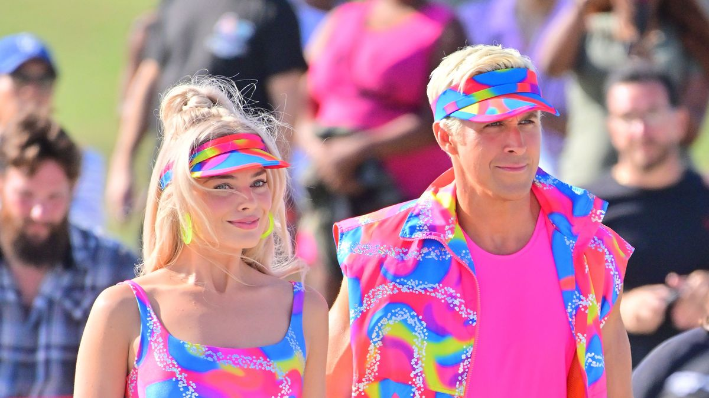
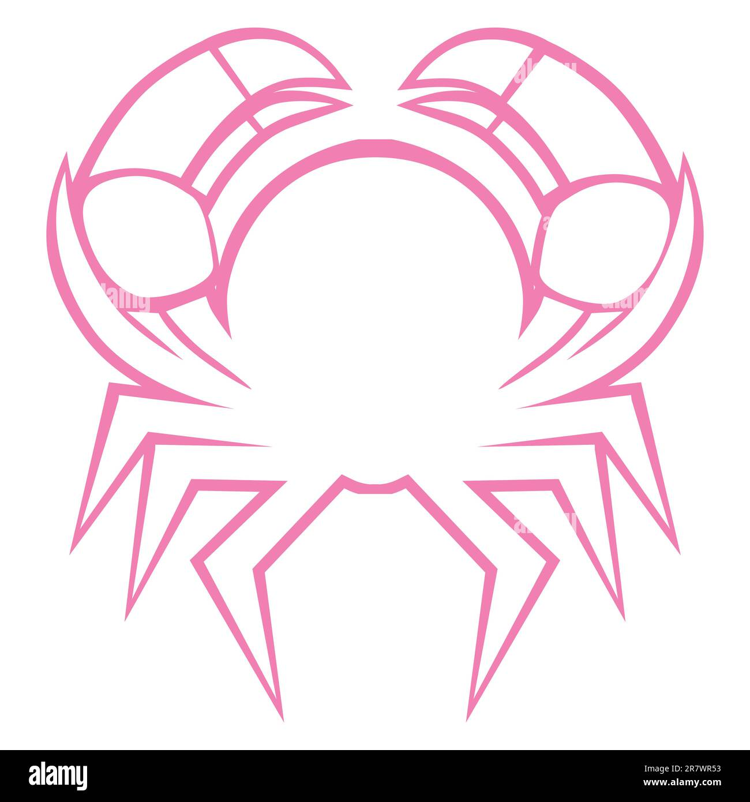

HORÓSCOPO
HORÓSCOPO SEMANAL CANCER
La chica cáncer está regida por la Luna, que representa las emociones y la maternidad, y por Venus, planeta de las relaciones y de la energía femenina. Tiene grandes aspiraciones como mujer, pero le cuesta desligarse de esas emociones y de su pasado familiar. Quiere cuidar de otros y demostrar que puede lidiar con todo: ¡es una súper mujer! Por eso, necesita un súper vestido que exlote su intensa personalidad sin dejar a un lado la terrura que la representa.